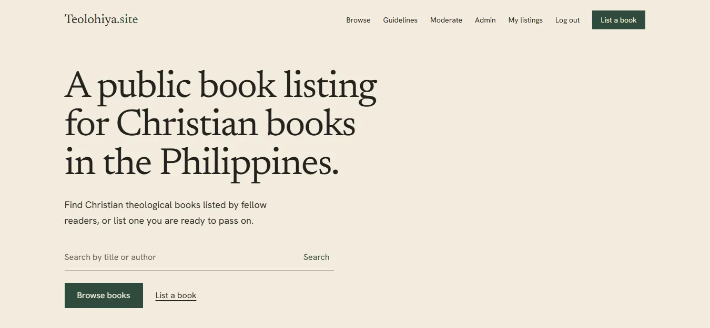
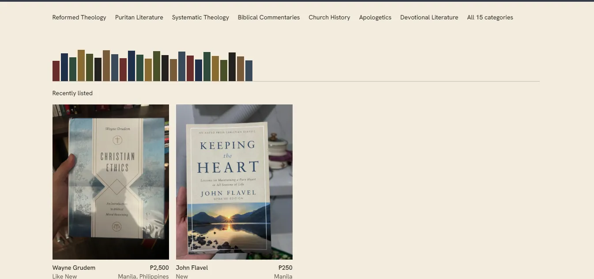
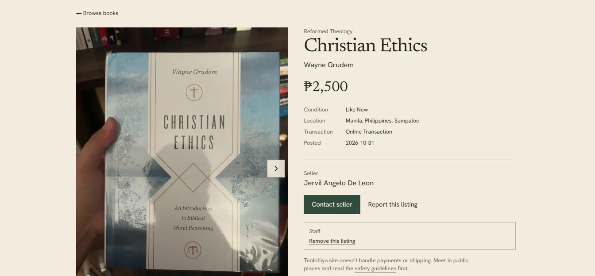
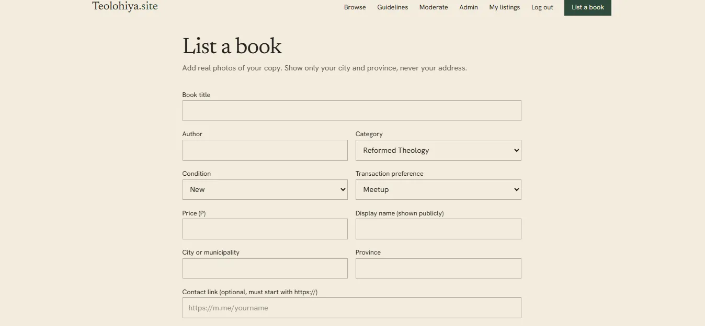
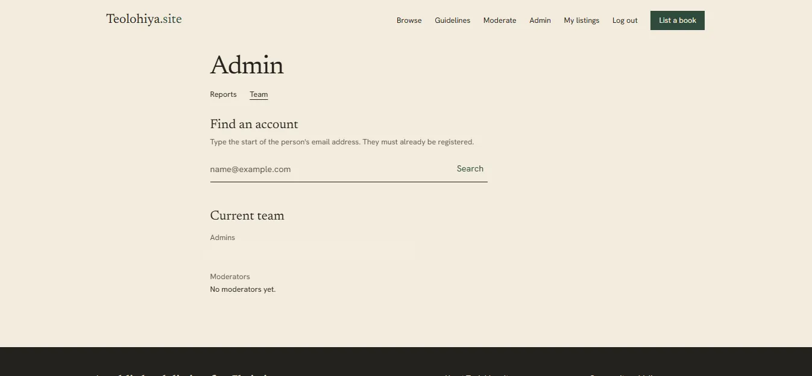
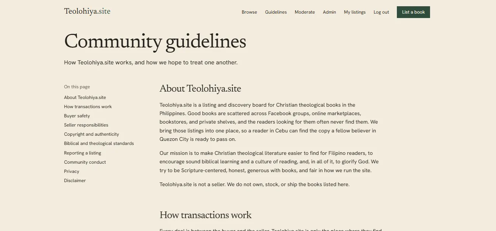

Teolohiya.site
A live, moderated book-listing platform where readers across the Philippines discover Christian theological books and contact sellers directly.
- Status
- Live at teolohiya.site
- Region
- AWS Singapore, ap-southeast-1
- Frontend
- Next.js App Router, TypeScript, Tailwind CSS
- Backend
- AWS Amplify Gen 2, serverless
The public repository documents the product, architecture and engineering decisions. The production source code is kept in a private repository.
Why it exists
Christian books in the Philippines are scattered across marketplaces, social groups and individual sellers. Teolohiya.site brings the listings into one searchable place.
It began as hands-on practice while I studied for cloud certifications and grew into a deployed, production-oriented AWS application. It is a discovery platform, not a checkout service: payment, delivery and seller arrangements happen outside the site.
A member lists a bookstaff review itapproved books become publicreaders contact the seller
Who can do what
| Role | Capabilities |
|---|---|
| Visitors | Browse approved books, search and filter listings, view photos and seller details, and report listings. |
| Members | Sign up with Cognito, create and manage listings, upload up to five photos, track review status and resubmit rejected listings. |
| Moderators | Review pending listings and photos, approve or reject with reasons, handle reports and remove listings. |
| Admins | Find registered users, manage moderator permissions, review reports, inspect audit logs and perform logged administrative reviews. |
The application






Architecture
Serverless and usage-priced end to end: no always-on compute and no NAT gateway, deployed from GitHub through Amplify to ap-southeast-1.
How the services work together
- Amplify Hosting and CloudFront serve the Next.js site over HTTPS with an ACM certificate on the custom domain.
- Cognito authenticates users and sets permissions through groups and IAM roles.
- The frontend reads and writes listing data through AppSync, backed by DynamoDB.
- Sellers upload photos to S3 under restricted paths; Lambda handles approval and publishing.
- CDK and CloudFormation manage infrastructure changes; IAM Identity Center and AWS Budgets cover secure access and cost.
AWS services and how each got there
Amplify Gen 2 provisions and manages several of these. They are listed separately to show their roles, not to suggest each was configured from scratch.
| Service | Role in Teolohiya.site | Provisioned through |
|---|---|---|
| AWS Amplify Hosting (Gen 2) | Hosts the Next.js app, connects GitHub deployments, manages the backend infrastructure. | Amplify |
| Amazon CloudFront | Delivers the hosted site through a CDN. | Managed by Amplify |
| AWS Certificate Manager | TLS certificate for HTTPS on the custom domain. | Managed HTTPS via Amplify |
| Amazon Cognito | Registration, email sign-in, identities, moderator and admin groups, role-based access. | Amplify Gen 2 backend |
| AWS AppSync | GraphQL API the frontend uses for listings and related operations. | Amplify Gen 2 backend |
| Private listings, approved public listings, reports and moderation audit records. | Amplify Gen 2 backend | |
| Uploaded book photos, pending images kept apart from approved ones with scoped access. | Amplify Gen 2 backend | |
| Trusted moderation and admin actions: approval, rejection, removal, role management. | Amplify Gen 2 backend | |
| CloudFormation and CDK | Define and deploy the backend resources as infrastructure as code. | Used by Amplify |
| AWS IAM | Least-privilege permissions for application roles and deployment access. | Amplify and account |
| AWS IAM Identity Center | SSO access to AWS without long-lived user access keys. | AWS account |
| AWS Budgets | Cost alerts and spending visibility for the account. | AWS account |
Moderation and security
Listings are private until approved. The browser cannot approve a listing or write protected moderation fields.
Listing lifecycle
| From | To | When |
|---|---|---|
| New | Pending | Member submits a listing |
| Pending | Approved | Staff approves |
| Pending | Rejected | Staff rejects with a reason |
| Rejected | Pending | Seller edits and resubmits |
| Approved | Pending | Seller makes a significant edit |
| Approved | Removed | Staff removes it |
| Approved | Sold | Seller marks it sold |
| Pending | Withdrawn | Seller withdraws it |
- Separate private and public dataOnly sanitised, approved listings are copied into the guest-readable table.
- Server-controlled moderationLambda handles approval, rejection, removal, role changes and audit entries.
- Role enforcementCognito groups, IAM roles and live authorisation checks protect admin actions.
- No moderator self-approvalAdmin exceptions are explicitly logged.
- Concurrency protectionOptimistic locking prevents approving a stale listing revision.
- Photo isolationPrivate
pending/{identity}/*uploads, publicapproved/*images, scoped permissions and server-side path checks. - Abuse controlsImage type and size checks, submission limits, and reporting that staff can act on.
Engineering decisions
Release discipline: strict TypeScript, ESLint, production builds, sandbox testing, explicit deployment confirmation, and rollback plans that account for database schema changes.
| Challenge | Approach |
|---|---|
| Keep unreviewed listings out of public view | Separate Listing and PublicListing models, with Lambda-controlled publication |
| Stop client-side approval or role escalation | Protected fields, server-side group checks and scoped IAM permissions |
| Avoid approving outdated content | Version-aware moderation using optimistic locking |
| Ship changes without losing production data | Amplify sandbox testing, guarded releases and staged schema migrations |
| Keep running costs proportional to usage | Serverless, usage-based services; no always-on compute or NAT gateway |
Lessons learned
- Authorisation spans services. Cognito group membership alone is not enough; IAM and S3 permissions have to match each role.
- Moderation is a backend concern. Protected state changes belong on the server, not in requests the browser controls.
- Schema changes need deliberate rollouts. Reverting to an older backend build can be unsafe once newer data models exist.
- Small production safeguards matter. Audit logs, version checks, scoped uploads and release gates make a real difference.
Next steps
- Listing view and contact-click metrics
- Branded verification emails with Amazon SES
- Better indexing and server-rendered book pages
- Optional image screening to assist, not replace, manual review